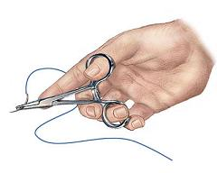

Scientists frequently draw on the wonders of nature to solve problems. How has this tiny creature saving lives?
Figure 1: A sandcastle worm, named after the sandcastle-like tubed structures made to house the worm colony, builds a tube of sand and white beads.
Sandcastle worms are pinky-length marine worms that build their submarine colonies around themselves by connecting sand using a special glue that they secrete. This nifty substance is the inspiration for a better bioadhesive for use during heart surgury because it has the ability to adhere well in wet environments, a quality that various traditional medical adhesives lack.
For example, cyanoacrylate is a common medical adhesive that is difficult to use in wet environments because it can unintentionally cure/harden upon contact with water. Even if placed properly, other hydrophilic glues can get washed away by the running blood, or they can absorbe water, swell, and cause irritation or harm.

Figure 2: Many medical glues are made of compounds similar to Crazy Glue (left)! An alternative method of closing a wound is by sewing the skin together with surgical sutures (right).
Harvard professor Jeffrey Karp collaborated with Nora Lang, Maria Pereira, Robert Langer, and Pedro del Nido, researchers from the Boston’s Children Hospital, Brigham and Women’s Hospital, the Massachusetts Institute of Technology, to develop a biodegradable, biocompatible, and versatile adhesive. They compared the adhesion strength of this hydrophobic, light-activated adhesive (HLAA) to fibrin-sealant and medical-grade cyanoacrylate (CA) when patching heart defects and sealing artery defects to show the potential of this novel solution.